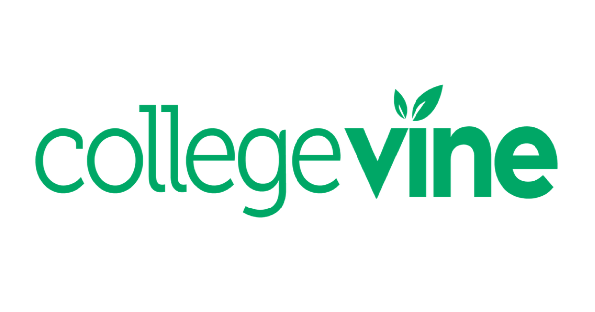

Hi there!
I'm an entrepreneurial self-starter with a passion for leveraging technology
to create communities and make the world a better place.
My current interests include game tech, VR/AR, data analytics, and consumer software products.
EXPERIENCE
New York Life
Data Analytics | Customer Insights
This summer, I had the opportunity to work as a data analyst for the New York Life Direct, Customer Insights team. Here, I gained experience performing large-scale data manipulation, data mining, and data interpretation to identify actionalable insights for multiple cross-functional groups within the Insurance Operations sector.
During my 10-week internship, I led two initiatives, a Customer Journey Map creation and an overhaul of the customer retention process. The latter of which, projects to increase monthly annualized premiums retained by 25%, amounting in nearly $200k saved per month moving forward.

CollegeVine
Consultant
During my sophomore year, I mentored a cohort of high school students of various backgrounds, assisting them with college application readiness, college-specific essay writing, and interview preparation.
I conducted an average of 12 video meetings each week across all 6 clients, resulting in 50% of the cohort receiving an offer from one of their top choices, or being selected for a competitive, merit-based scholarship.
Team Genji
Marketing and Corporate Partnerships
Last summer, I helped a startup esports team, Team Genji, into now the number one ranked Hearthstone team in the world.
While the players travelled to win points for the team, I reached out to hundreds of marketing heads, facilitated numerous meetings with brands, and drafted several partnership contracts in hopes of securing sponsorship deals from national mega-corporations. After three months, I secured deals with multiples companies, including Soylent and Logitech.
Personal
and
Creative
Amherst College Entrepreneurship Society
President
On campus, I facilitate and organize workshops, off-campus events, and entrepreneurship conferences/competitions for the entire Amherst College community. Next year, we plan to create a speaker series tailored to fostering innovative thinking in young students called the "Startup School." More news on that soon!
In addition to my school-specific involvement, I have also worked to create and grow a local dance competition, called Jumpstart Expo in my hometown of Montgomery, New Jersey. The competition annually brings in over $2,500 in scholarship money for underprivileged high school graduates looking to pursue higher education.
You can check out some of the annual advertisements and dance videos on our videographer, Justin's channel here!
To see more of my personal and creative content, click on the dedicated tab in the top navigation bar.